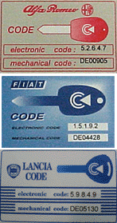

[838]Key Programming
1.Programming should be done with engine off, ignition on and good battery level.
2.Remember that all the available keys must be stored at the same time. Stored keys that are not available during this storage procedure will be deleted from the control unit memory and will not be possible to be used again. You can only store 8 keys.
3.The programming is only for cars with system CODE 2 installed. This is recognized by the number 2 stamped on the key. (See picture below)

4.The vehicle has a specific Code card. On this card there is a Electronic code. To perform this programming the code must be available. (See picture below)

5.To test the remote control,the diagnos must be turned off and all doors and hatches should be closed. It might take some time after learning the remote control before it works.
6.These DTC codes are not allowed to be in the system during the programming:
Signal Body computer
Transponder antenna
Battery level